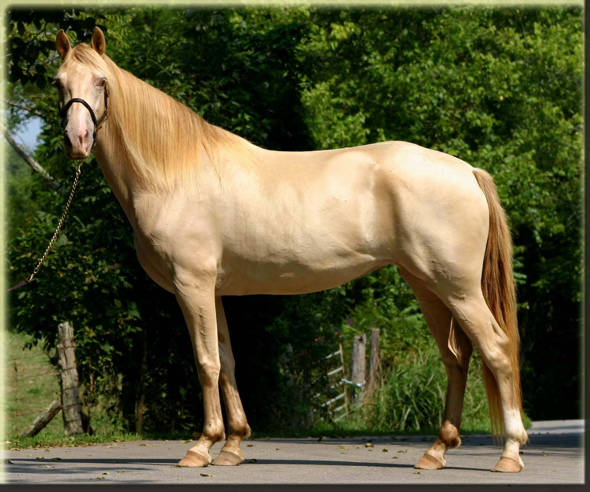
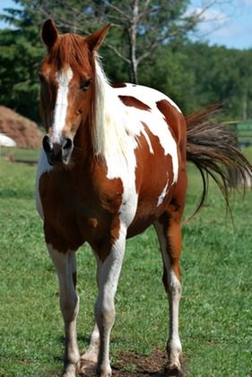

About us
This is our small, family owned, and private lesson training facility. We want to teach you how to succeed on the trail and have a great and safe relationship with your equine partner.
We teach Horsemanship, Riding Lessons, Horse Therapy & Boarding
We take pride in the care of our horses. Each horse has their own special diet and we monitor during feeding to make sure nobody accidentally anyone elses dinner. As for the safety of our horses and riders, we provide helmets and don't allow riding when temeratures are above 90 degrees in the summer and no lower than 45 degrees in the winter.
Our Herd

Honey
This is Honey, our 18-20 year-old Rocky Mountain Horse with a heart as golden as her champagne-colored coat! She'd a steady and reliable lesson horse -- perfect for beginners learning the ropes. While she can be a little stubborn at time, Honey's sweet and patient nature shines through on the trail. You'll also spot Honey in local horse shows, proudly ridden by our coaches and riders.

Person 2 Name
This is a short bio for person 2.